수질환경기사 (2017-03-05 기출문제)
1과목: 수질오염개론
1. 우리나라 개인하수처리시설에서 발생되는 정화조오니에 대한 설명으로 틀린 것은?
- BOD농도 8000mg/L내외
- SS농도 22000mg/L내외
- 분뇨보다 생물학적 분해불가능 성분을 적게 포함 한다.
- 성상은 처리시설형식에 따라 현격한 차이를 보인다.
(정답률: 75%)

2. 하천수의의 난류 확산 방정식과 상관성이 적은 인자는?
- 유량
- 침강속도
- 난류확산계수
- 유속
(정답률: 72%)
3. 지구상에 분포하는 수량 중 빙하(만년설포함)다음으로 가장 많은 비율을 차지하고 있는 것은? (단, 담수기준)
- 하천수
- 지하수
- 대기습도
- 토양수
(정답률: 86%)
4. 하천이나 호수의 심층에서 미생물의 작용에 관한 설명으로 가장 거리가 먼 것은?
- 수중의 유기물은 분해되어 일부가 세포함성이나 유지대사를 위한 에너지원이 된다.
- 호수심층에 산소가 없을 때 질산이온을 전자수용체로 이용하는 종속영양세균인 탈질화 세균이 많아진다.
- 유기물이 다량 유입되면 혐기성 상태가 되어와 같은 기체를 유발하지만 호기성 상태가 되면 암모니아성 질소가 증가한다.
- 어느 정도 유기물이 분해된 하천의 경우 조류발생이 증가할 수 있다.
(정답률: 64%)
5. 생채 내에 필수적인 금속으로 결핍 시에는 인슐린의 저하를 일으킬 수 있는 유해물질은?
- Cd
- Mn
- CN
- Cr
(정답률: 68%)
6. 25℃, 2기압의 메탄가스 40Kg을 저장하는데 필요한 탱크의 부피(m3)는? (단, 이상기체의 법칙 R=0.082Lㆍatm/molㆍk적용)
- 20.6
- 25.3
- 30.6
- 35.3
(정답률: 73%)
7. 하천의 수질관리를 위하여 1920년대초에 개발된 수질예측모델로 BOD와 DO반응 즉 유기물 분해로 인한 DO소비와 대기로부터 수면을 통해 산소가 재공급되는 재폭기만 고려한 것은?
- DO SAG Ⅰ 모델
- QUAL- I 모델
- WQRRS 모델
- Streeter – Phelps 모델
(정답률: 72%)
8. 알칼리도(Alkalinity)에 관한 설명으로 가장 거리가 먼 것은?
- P-알칼리도와 M-알칼리도를 합친 것을 총 알칼리도라 한다.
- 알칼리도 계산은 다음 식으로 나타낸다.
 .a : 소비된 산의 부피(mL) N : 산의 농도(eq/L), V : 시료의 양(mL)
.a : 소비된 산의 부피(mL) N : 산의 농도(eq/L), V : 시료의 양(mL) - 실용목적에서는 자연수에 있어서 수산화물, 탄산염, 중탄산염 이외, 기타물질에 기인되는 알칼리도는 중요하지 않다.
- 부식제어에 관련되는 중요한 변수인 Langelier 포화지수 계산에 적용된다.
(정답률: 75%)
9. 하천수질모델 중 WQRRS에 관한 설명으로 가장 거리가 먼 것은?
- 하천 및 호수의 부영양화를 고려한 생태계 모델이 다.
- 유속, 수심, 조도계수에 의해 확산계수를 결정한다.
- 호수에는 수심별 1차원 모델이 적용된다.
- 정적 및 동적인 하천의 수질, 수문학적 특성이 광범위하게 고려된다.
(정답률: 69%)
10. 세포의 형태에 따른 세균의 종류를 올바르게 짝지은 것은?
- 구형 – Vibrio cholera
- 구형 – Spirilum volutans
- 막대형 – Bacillus subtilis
- 나선형 - Streptococcus
(정답률: 76%)
11. 물에 관한 설명으로 틀린 것은?(오류 신고가 접수된 문제입니다. 반드시 정답과 해설을 확인하시기 바랍니다.)
- 수소결합을 하고 있다.
- 수온이 증가할수록 표면장력은 커진다.
- 온도가 상승하거나 하강하면 체적은 증대한다.
- 용융열과 증발열이 높다.
(정답률: 81%)
12. 오염된 물속에 있는 유기성 질소가 호기성 조건하에서 50일 정도 시간이 지난 후에 가장 많이 존재하는 질소의 형태는?
- 암모니아성 질소
- 아질산성 질소
- 질산성 질소
- 유기성 질소
(정답률: 64%)
13. 글리신(CH2(NH2)CHOO)의 이론적 COD/TOC의 비는? (단, 글리신의 최종 분해산물은 CO2, HNO3, H2O 이다.)
- 2.83
- 3.76
- 4.67
- 5.38
(정답률: 70%)
14. 자정상수(f)의 영향 인자에 관한 설명으로 옳은 것은?
- 수심이 깊을수록 자정상수는 커진다.
- 수온이 높을수록 자정상수는 작아진다.
- 유속이 완만할수록 자정상수는 커진다.
- 바닥구배가 클수록 자정상수는 작아진다.
(정답률: 74%)
15. 하천의 BOD5가 220mg/L이고, BODU가 470mg/L일 때 탈산소계수(K1, DAY-1)값은? (단, 상용대수 기준)
- 0.045
- 0.⑤5
- 0.065
- 0.075
(정답률: 70%)
16. 물질대사중 동화작용을 가장 알맞게 나타낸것은?
- 잔여영양분 + ATP → 세포물질 + ADP + 무기인 + 배설물
- 잔여영양분 + ADP + 무기인→ 세포물질 + ATP + 배설물
- 세포내 영양분의 일부 + ATP→ ADP + 무기인 + 배설물
- 세포내 영양분의 일부 + ADP + 무기인→ ATP + 배설물
(정답률: 72%)
17. 해수에서 영양염류가 수온이 낮은 곳에 많고 수온이 높은지역에서 적은 이유로 틀린 것은?
- 수온이 낮은 바다의 표층수는 본래 영양염류가 풍부한 극지방의 심층수로부터 기원하기 때문이다.
- 수온이 높은 바다의 표층수는 적도부군의 표층수로부터 기원하므로 영양염류가 결핍되어 있다.
- 수온이 낮은 바다는 겨울에도 표층수 냉각에 따른 밀도 변화가 적어 심층수로의 침강작용이 일어나지 않기 때문이다.
- 수온이 높은 바다는 수계의 안정으로 수직혼합이 일어나지 않아 표층수의 영양염류가 플랑크톡에의해 소비되기 때문이다.
(정답률: 69%)
18. C5H7O2N에 대한 이론적인 BOD10/COD는? (단, 탈산소계수 0.1/day, base는 상용대수, 화합 물은 100% 산화됨 [최종산물은 CO2, NH3, H2O], COD=BODU)
- 0.80
- 0.85
- 0.90
- 0.95
(정답률: 68%)
19. 해수의 특성으로 가장 거리가 먼 것은?
- 해수의 밀도는 수온, 염분, 수압에 영향을 받는다.
- 해수는 강전해질로서 1L당 평균 35g의 염분을 함유
- 해수내 전체질소중 35%정도는 질산성 질소등 무기성 질소 형태이다.
- 해수의 Mg/Ca비는 3 ~ 4 정도이다.
(정답률: 79%)
20. 하수량에서 첨두율(peaking factor)이라는 것은?
- 하수량의 평균유량에 대한 비
- 하수량의 최소유량에 대한 비
- 하수량의 최대유량에 대한 비
- 최대유량의 최소유량에 대한 비
(정답률: 67%)
2과목: 상하수도계획
21. 정수시설인 배수지에 관한 내용으로( )에 맞는 내용은?
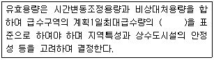
- 4시간분 이상
- 6시간분 이상
- 8시간분 이상
- 12시간분 이상
(정답률: 78%)
22. 하수도 관거 계획 시 고려할 사항으로 틀린 것은?
- 오수관거는 계획시간최대오수량을 기준으로 계획한다.
- 오수관거와 우수관거가 교차하여 역사이폰을 피할수 없는 경우, 우수관거를 역사이폰으로 하는 것이 좋다.
- 분류식과 합류식이 공존하는 경우에는 원칙적으로 양 지역의 관거는 분리하여 계획한다.
- 관거는 원칙적으로 암거로 하며 수밀한 구조로 하여야 한다.
(정답률: 71%)
23. 하수도시설인 유량조정조에 관한 내용으로 틀린 것은?
- 조의 용량은 체류시간 3시간을 표준으로 한다.
- 유효수심은 3 ~ 5m를 표준으로 한다.
- 유량조정조의 유출수는 침사지에 반송하거나 펌프로 일차침전지 혹은 생물반응조에 송수한다.
- 조내에 침전물의 발생 및 부패를 방지하기 위해 교반장치 및 산기장치를 설치한다.
(정답률: 69%)
24. 막여과 정수시설의 막을 약품 세철할 때 사용되는 약품과 제거가능 물질이 틀린 것은?
- 수산화나트륨 : 유기물
- 황산 : 무기물
- 옥살산 : 유기물
- 산 세제 : 무기물
(정답률: 66%)
25. 정수시설인 플록형성지에 관한 설명으로 틀린 것은?
- 혼화지와 침전지 사이에 위치하고 침전지에 붙여서 설치한다.
- 플록형성시간은 계획정수량에 대하여 20 ~ 40분간을 표준으로 한다.
- 플록형성지 내의 교반강도는 하류로 갈수록 점차 감소시키는 것이 바람직하다.
- 야간근무자도 플록형성상태를 감시할 수 있는 투명도 게이지를 설치하여야 한다.
(정답률: 68%)
26. 하천표류수를 수원으로 할 때 하천기준수량은?
- 평수량
- 갈수량
- 홍수량
- 최대홍수량
(정답률: 77%)
27. 역사이펀 관로의 길이 500m, 관경은 500mm이고, 경사는 0.3%라고 하면 상기 관로에서 일어나는 손실수두(m)와 유량(m3/sec)은?(단, Manning 조도계수 n값 = 0.013, 역사이펀 관로의 미소손실 = 총 5cm 수두, 역사이펀 손실수두 (H) = i × L + (1.5×V2/2g) + α, 만관이라고 가정)
- 1.63, 0.207
- 2.61, 0.207
- 1.63, 0.827
- 2.61, 0.827
(정답률: 45%)
28. 상수도 시설인 도수시설의 도수노선에 관한 설명으로 틀린 것은?
- 원칙적으로 공공도로 또는 수도 용지로 한다.
- 수평이나 수직방향의 급격한 굴곡을 피한다.
- 관로상 어떤 지점도 동수경사선보다 낮게 위치하지 않도록 한다.
- 몇 개의 노선에 대하여 건설비 등의 경제성, 유지 관리의 난이도 등을 비교, 검토하고 종합적으로 판단하여 결정한다.
(정답률: 72%)
29. 하천표류수 취수시설 중 취수문에 관한 설명으로 틀린 것은?
- 취수보에 비해서는 대량취수에도 쓰이나 보통 소량취수에 주로 이용된다.
- 유심이 안정된 하천에 적합하다.
- 토사, 부유물의 유입방지가 용이하다.
- 갈수 시 일정수심확보가 안되면 취수가 불가능하다.
(정답률: 65%)
30. 하수 고도처리(잔류 SS 및 잔류 용존 유기물제거) 방법인 막 분리법에 적용되는 분리막 모듈형식으로 가장 거리가 먼 것은?
- 중공사형
- 투사형
- 판형
- 나선형
(정답률: 57%)
31. 관거별 계획하수량을 정할 때 고려할 사항으로 틀린 것은?
- 오수관거에서는 계획1일 최대오수량으로 한다.
- 우수관거에서는 계획우수량으로 한다.
- 합류식 관거에서는 계획시간최대오수량에 계획우수량을 합한 것으로 한다.
- 차집관거는 우천 시 계획오수량으로 한다.
(정답률: 58%)
32. 수돗물의 부식성 관련 지표인 랑게리아지수 (포화지수, LI)의 계산식으로 옳은 것은? (단, pH = 물의 실제 pH, pHs = 수중의 탄산칼슘이 용해되거나 석출되지 않는 평형상태의 pH)
- LI = pH + pHs
- LI = pH - pHs
- LI = pH × pHs
- LI = pH / pHs
(정답률: 68%)
33. 유역면적이 100ha이고 유입시간(time of inlet)이 8분, 유출계수(C)가 0.38일 때 최대계획우수유출량(m3/sec)은? (단, 하수관거의 길이(L) = 400m, 관유속 = 1.2m/sec로 되도록 설계,
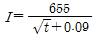
, 합리식 적용- 약 18
- 약 24
- 약 36
- 약 42
(정답률: 56%)
34. 정수장에서 염소 소독 시 pH가 낮아질수록 소독 효과가 커지는 이유는?
- OCl-의 증가
- HOCl의 증가
- H+의 증가
- O(발생기 산소)의 증가
(정답률: 69%)
35. 정수처리를 위한 막여과설비에서 적절한 막여과의 유속 설정 시 고려사항으로 틀린 것은?
- 막의 종류
- 막공급의 수질과 최고 수온
- 전처리설비의 유무와 방법
- 입지조건과 설치공간
(정답률: 66%)
36. 상수의 배수시설인 배수지에 관한 설명으로 틀린 것은?
- 가능한 한 급수지역의 중앙 가까이 설치한다.
- 유효수심은 1 ~ 2m 정도를 표준으로 한다.
- 유효용량은 “시간변동조정용량”과 “비상대처용량”을 합하여 급수구역의 계획1일최대급수량의 12시간분 이상을 표준으로 한다.
- 자연유하식 배수지의 표고는 최소동수압이 확보되는 높이여야 한다.
(정답률: 71%)
37. 합류식에서 우천 시 계획오수량은 원칙적으로 계획시간 최대오수량의 몇 배 이상으로 고려하여야 하는가?
- 1.5배
- 2.0배
- 2.5배
- 3.0배
(정답률: 71%)
38. 공동현상(Cavitation)이 발생하는 것을 방지하기 위한 대책으로 틀린 것은?
- 흡입측 밸브를 완전히 개방하고 펌프를 운전한다.
- 흡입관의 손실을 가능한 크게 한다.
- 펌프의 위치를 가능한 한 낮춘다.
- 펌프의 회전속도를 낮게 선정한다.
(정답률: 72%)
39. 하수 관거시설에 대한 설명으로 틀린 것은?
- 오수관거의 유속은 계획시간최대오수량에 대하여 최소 0.6m/s, 최대 3.0m/s로 한다.
- 우수관거 및 합류관거에서의 유속은 계획우수량에 대하여 최소 0.8m/s, 최대 3.0m/s로 한다.
- 오수관거의 최소관경은 200mm를 표준으로 한다.
- 우수관거 및 합류관거의 최소관경은 350mm를 표준으로 한다.
(정답률: 68%)
40. 로지스틱(logistic)인구 추정공식에 관한 설명으로 틀린 것은? (y=K/(1+ea-bx))
- y : 추정치
- K : 년 평균 인구 증가율
- x : 경과년수
- a,b : 상수
(정답률: 67%)
3과목: 수질오염방지기술
41. 역삼투장치로 하루에 20000L의 3차 처리된 유출수를 탈염시키고자 한다. 25℃에서의 물질 전달계수는 0.2068L/(day ㆍ m2)(kPa), 유입수와 유출수의 압력차는 2400kPa, 유입수와 유출수의 삼투압차는 310kPa, 최저운전온도는 10℃이다. 요구 되는 막면적(m2)은? (단,A10℃=1.2A25℃)
- 약 39
- 약 56
- 약 78
- 약 94
(정답률: 60%)
42. 어떤 물질이 1차 반응으로 분해되며, 속도상수는 0.⑤/day이다. 유량이 395m3/day일 때, 이 물질 의 90%를 제거하는데 필요한 PFR부피(m3)는?
- 17250
- 18190
- 19530
- 20350
(정답률: 53%)
43. 수처리 과정에서 부유되어 있는 입자의 응집을 초래하는 원인으로 가장 거리가 먼 것은?
- 제타 포텐셜의 감소
- 플록에 의한 체거름 효과
- 정전기 전하 작용
- 가교현상
(정답률: 53%)
44. 혼합에 사용되는 교반강도의 식에 대한 설명으로 틀린 것은? (단, 교반강도 식 : G=(P/μV)1/2)
- G = 속도경사(1/sec)
- P = 동력(N/sec)
- μ = 점성계수(N · sec/m2)
- V = 부피(m3)
(정답률: 54%)
45. 생물학적 질소제거공정에서 질산화로 생성된 NO3-N40mg/L가 탈질되어 질소로 환원될 때 필요한 이론적인 메탄올(CH3OH)의 양(mg/L)은?
- 17.2
- 36.6
- 58.4
- 76.2
(정답률: 32%)
46. 다음 물질 중 증기압(mmHg)이 가장 큰 것은?
- 물
- 에틸 알코올
- n-헥산
- 벤젠
(정답률: 55%)
47. 플록을 형성하여 침강하는 입자들이 서로 방해를 받으므로 침전속도는 점차 감소하게되며 침전하는 부유물과 상등수간에 뚜렷한 경계면이 생기는 침전형태는?
- 지역침전
- 압축침전
- 압밀침전
- 응집침전
(정답률: 69%)
48. 1차처리된 분뇨의 2차 처리를 위해 폭기조, 2차 침전지로 구성된 표준활성슬러지를 운영하고 있다. 운영조건이 다음과 같을 때 고형물 체류시간 (SRT, day)은? (단, 유입유량 = 1000m3/day, 폭기조 수리학적체류시간 = 6시간, MLSS 농도 = 3000mg/L, 잉여슬러지 배출량 = 30m3/day, 잉여슬러지 SS농도 = 10000mg/L, 2차침전지 유출수 SS농도 =5mg/L)
- 약 2
- 약 2.5
- 약 3
- 약 3.5
(정답률: 46%)
49. 하수관거 내에서 황화수소(H2S)가 발생되는 조건으로 가장 거리가 먼 것은?
- 용존산소의 결핍
- 황산염의 환원
- 혐기성 세균의 증식
- 염기성 pH
(정답률: 57%)
50. 미처리 폐수에서 냄새를 유발하는 화합물과 냄새의 특징으로 가장 거리가 먼 것은?
- 황화수소 – 썩은 달걀냄새
- 유기 황화물 – 썩은 채소냄새
- 스카톨 – 배설물냄새
- 디아민류 - 생선냄새
(정답률: 67%)
51. NO3-가 박테리아에 의하여 N2로 환원되는 경우폐수의 pH는?
- 증가한다.
- 감소한다.
- 변화없다.
- 감소하다 증가한다.
(정답률: 58%)
52. 염소의 살균력에 대한 설명으로 옳지 않은 것은?
- 살균강도는 HOCl > OCl-이다.
- 염소의 살균력은 반응시간이 길고 온도가 높을 때 강하다.
- 염소의 살균력은 주입농도가 높고 pH가 낮을 때 강하다.
- Chloramines은 살균력은 강하나 살균작용은 오래 지속되지 않는다.
(정답률: 57%)
53. 활성슬러지 공정에서 폭기조나 침전지 표면에 갈색거품을 유발시키는 방선균의 일종인 Nocardia의 과도한 성장을 유발시킬 수 있는 요인 또는 제어방법에 관한 내용으로 틀린 것은?
- 낮은 F/M 비가 유발 요인이 된다.
- 불충분한 슬러지 인출로 인한 MLSS농도의 증가가 유발 요인이 된다.
- 미생물 체류시간을 증가시킨다.
- 화학약품을 투여하여 폭기조의 pH를 낮춘다.
(정답률: 52%)
54. 슬러지를 진공 탈수 시켜 부피가 50% 감소되었다. 유입슬러지 함수율이 98%이었다면 탈수 후 슬러지의 함수율(%)은? (단, 슬러지 비중은 1.0 기준)
- 90
- 92
- 94
- 96
(정답률: 52%)
55. 여과에서 단일 메디아 여과상보다 이중 메디아 혹은 혼합 메디아를 사용하는 장점으로 가장 거리가 먼 것은?
- 높은 여과속도
- 높은 탁도를 가진 물을 여과하는 능력
- 긴 운전시간
- 메디아 수명 연장에 따른 높은 경제성
(정답률: 51%)
56. 급속 모래여과를 운전할 때 나타나는 문제점이라 할 수 없는 것은?
- 진흙 덩어리(mud ball)의 축적
- 여재의 층상구조 형성
- 여과상의 수축
- 공기 결합(air binding)
(정답률: 50%)
57. 다음 그림은 하수 내 질소, 인을 효과적으로 제거하기 위한 어떤 공법을 나타낸 것인가?
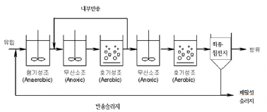
- VIP process
- A2/O process
- 수정-Bardenpho process
- phostrip process
(정답률: 57%)
58. 2000m3/day의 하수를 처리하는 하수 처리장의 1차 침전지에서 침전고형물이 0.4ton/day, 2차 침전지에서 0.3ton/day이 제거되며 이 때 각 고형물의 함수율은 98%, 99.5%이다. 체류시간을 3일로 하여 고형물을 농축시키려면 농축조의 크기 (m3)는? (단, 고형물의 비중은 1.0으로 가정)
- 80
- 240
- 620
- 1860
(정답률: 41%)
59. 폐수 중 크롬이 함유되었을 경우의 설명으로 가장 거리가 먼 것은?
- 크롬은 자연수에서 3가 크롬 형태로 존재한다.
- 3가 크롬은 인체 건강에 그다지 해를 끼치지 않는다.
- 3가 크롬은 자연수에서 완전 가수분해된다.
- 6가 크롬은 합금, 도금, 페인트 생산 공정에 이용 된다.
(정답률: 52%)
60. 평균유량이 20000m3/d이고 최고 유량이 30000m3/d인 하수처리장에 1차 침전지를 설계하고자 한다. 표면월류는 평균유량 조건하에서 25m/d, 최대유량조건하에서 60m/d를 유지하고자 할 때 실제 설계하여야 하는 1차 침전지의 수면적(m2)은? (단, 침전지는 원형침전지라 가정)
- 500
- 650
- 800
- 1300
(정답률: 51%)
4과목: 수질오염공정시험기준
61. 0.0⑤M-KMnO4 400mL를 조제하려면 KMnO4약 몇 g을 취해야 하는가? (단, 원자량 K = 39, Mn = 55)
- 약 0.32
- 약 0.63
- 약 0.84
- 약 0.98
(정답률: 52%)
62. 원자흡수분광광도법의 일반적인 분석오차원인으로 가장 거리가 먼 것은?
- 계산의 잘못
- 파정선택부의 불꽃 역화 또는 과열
- 검량선 작성의 잘못
- 표준시료와 분석시료의 저성이나 물리적 화학적 성질의 차이
(정답률: 53%)
63. 백분율(W/V, %)의 설명으로 옳은 것은?
- 용액 100g 중의 성분무게(g)를 표시
- 용액 100mL 중의 성분용량(mL)을 표시
- 용액 100mL 중의 성분무게(g)를 표시
- 용액 100(g) 중의 성분용량(mL)을 표시
(정답률: 63%)
64. 유기물을 다량 함유하고 있으면서 산 분해가 어려운 시료에 적용되는 전처리법은?
- 질산 – 염산법
- 질산 – 황산법
- 질산 – 초산법
- 질산 - 과염소산법
(정답률: 56%)
65. 크롬-자외선/가시선 분광법에 관한 내용으로 틀린 것은?
- KMnO4로 3가 크롬을 6가크롬으로 산화시킨다.
- 적자색 착화합물의 흡광도를 430nm에서 측정한다.
- 정량한계는 0.04mg/L이다.
- 6가크롬을 산성에서 다이페닐카바자이드와 반응시킨다.
(정답률: 52%)
66. 수질오염공정시험기준에서 암모니아성 질소의 분석방법으로 가장 거리가 먼 것은?
- 자외선/가시선 분광법
- 연속흐름법
- 이온전극법
- 적정법
(정답률: 47%)
67. 램버트-비어(Lambert-Beer)의 법칙에서 흡광도의 의미는? (단, I0= 입사광의 강도, It = 투사광의 강도, t = 투과도)
- It/I0
- t×100
- log(1/t)
- It×10-1
(정답률: 64%)
68. 분원성 대장균군-막여과법의 측정방법으로( ) 에 옳은 내용은?
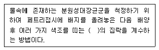
- 황색
- 녹색
- 적색
- 청색
(정답률: 64%)
69. 배수로에 흐르는 폐수의 유량을 부유체를 사용하여 측정했다. 수로의 평균단면적 0.5m2, 표면 최대속도 6m/s일 때 이 폐수의 유량(m3/min)은? (단, 수로의구성, 재질, 수로단면의 형상, 기울기등이 일정하지 않은 개수로)
- 115
- 135
- 185
- 245
(정답률: 45%)
70. 기체크로마토그래피법에 의한 PCB 정량법에서 실리카겔 칼럼의 역할은?
- 기체크로마토그래피의 정량물질을 고열로부터 보호하기 위한 칼럼이다.
- 기체크로마토그래피에 분석용 시료를 주입하기 전에 PCB 이외 극성화합물을 제거하는 칼럼이다.
- 분석용 시료 중의 수분을 흡수시키는 칼럼이다.
- 시료중 가용성 염류를 분리시키는 이온교환 칼럼이다.
(정답률: 54%)
71. 수질오염공정시험기준 상 냄새 측정에 관한 내용으로 틀린 것은?
- 물속의 냄새를 측정하기 위하여 측정자의 후각을 이용하는 방법이다.
- 잔류염소의 냄새는 측정에서 제외한다.
- 냄새 역치는 냄새를 감지할 수 있는 최대 희석배수를 말한다.
- 각 판정요원의 냄새의 역치를 산술평균하여 결과로 보고한다.
(정답률: 65%)
72. 수질연속 자동측정기기의 설치방법 중 시료채취지점에 관한 내용으로( )에 옳은 것은?
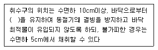
- 5cm 이상
- 15cm 이상
- 25cm 이상
- 35cm 이상
(정답률: 65%)
73. 취급 또는 저장하는 동안에 이물질이 들어가거나 내용물이 손실되지 아니하도록 보호하는 용기는?
- 밀폐용기
- 기밀용기
- 밀봉용기
- 차광용기
(정답률: 66%)
74. 흡광공도계용 흡수셀의 재질과 그에 따른 파장범위를 잘못 짝지은 것은? (단, 재질 – 파장범위)
- 유리제 – 가시부
- 유리제 – 근적외부
- 석영제 – 자외부
- 플라스틱제 - 근자외부
(정답률: 50%)
75. 황산산성에서 과요오드산 칼륨으로 산화하여 생성된 이온을 흡광도 525nm에서 측정하여 정량하는 금속은?
- Mn++
- Ni++
- Co++
- Pb++
(정답률: 50%)
76. 70% 질산을 물로 희석하여 5% 질산으로 제조하려고 한다. 70% 질산과 물의 비율은?
- 1 : 9
- 1 : 11
- 1 : 13
- 1 : 15
(정답률: 57%)
77. 유도결합플라스마 발광광도법에 대한 설명으로 틀린 것은?
- 플라스마는 그 자체가 광원으로 이용되기 떄문에 매우 넓은 농도범위에서 시료를 측정한다.
- ICP의 토치는 제일 안쪽으로는 시료가 운반가스와 함께 흐르며, 가운데 관으로는 보조가스, 제일 바깥쪽 관에는 냉각가스가 도입된다.
- 알곤플라스마는 토치 위에 불꽃형태로 생성되지만 온도, 전자 밀도가 가장 높은 영역은 중심축보다 안쪽에 위치한다.
- ICP 발광광도 분석장치는 시료주입부, 고주파 전원부, 광원부, 분광부, 연산처리부 및 기록부로 구성 되어있다.
(정답률: 47%)
78. 용해성 망간을 측정하기 위해 시료를 채취 후속히 여과해야 하는 이유는?
- 망간을 공침시킬 우려가 있는 현탁물질을 제거하기 위해
- 망간이온을 접촉적으로 산화, 침전시킬 우려가 있는 이산화망간을 제거하기 위해
- 용존상태에서 존재하는 망간과 침전상태에서 존재 하는 망간을 분리하기 위해
- 단시간내에 석출, 침전할 우려가 있는 콜로이드 상태의 망간을 제거하기위해
(정답률: 49%)
79. 카드뮴을 자외선/가시선 분광법을 이용하여 측정할 때에 관한 설명으로 ( )에 내용으로 옳은 것은?
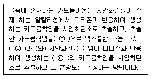
- ㉠ 타타르산 용액, ㉡ 수산화나트륨, ㉢ 적색
- ㉠ 아스코르빈산 용액, ㉡ 염산(1+15), ㉢ 적색
- ㉠ 타타르산 용액, ㉡ 수산화나트륨, ㉢ 청색
- ㉠ 아스코르빈산 용액, ㉡ 염산(1+15), ㉢ 청색
(정답률: 57%)
80. 기체크로마토그래피법의 어떤 정량법에 대한 설명인가?
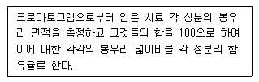
- 내부표준 백분율법
- 보정성분 백분율법
- 성분 백분율법
- 넓이 백분율법
(정답률: 66%)
5과목: 수질환경관계법규
81. 대권역 수질 및 수생태계 보전계획에 포함되어야 할 사항으로 틀린 것은?
- 상수원 및 물 이용현황
- 점오염원, 비점오염원 및 기타수질오염원의 분포현황
- 점오염원, 비점오염원 및 기타수질오염원의 수질오염 저감시설 현황
- 점오염원, 비점오염원 및 기타수질오염원에서 배출되는 수질오염물질의 양
(정답률: 46%)
82. 비점오염저감계획서에 포함되어야 하는 사항으로 틀린 것은?
- 비점오염원 저감방안
- 비점오염원 관리 및 모니터링 방안
- 비점오염저감시설 설치계획
- 비점오염원 관련 현황
(정답률: 53%)
83. 사업장별 환경기술인의 자격기준에 관한 설명으로 틀린 것은?
- 연간 90일 미만 조업하는 제1종부터 제3종까지의 사업장은 제4종사업장•제5종사업장에 해당하는 환경기술인을 선임할수 있다.
- 공동방지시설의 경우에 폐수배출량이 제1종 또는 제2종사업장은 제3종사업장에 해당하는 환경기술인을 둘 수 있다.
- 제1종 또는 제2종사업장 중 1개월간 실제 작업한 날만을 계산하여 1일 평균 17시간이상 작업하는 경우 그 사업장은 환경기술인을 각각 2명 이상 두어야한다.
- 방지시설 설치면제 대상인 사업장과 배출시설에서 배출되는 수질오염물질 등을 공동방지시설에서 처리하게 하는 사업장은 제4종사업장•제5종사업장에 해당하는 환경기술인을 둘 수 있다.
(정답률: 41%)
84. 호소수 이용 상황 등의 조사•측정에 관한 내용으로 ( )에 옳은 것은?
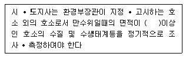
- 10만 제곱미터
- 20만 제곱미터
- 30만 제곱미터
- 50만 제곱미터
(정답률: 53%)
85. 폐수처리업자의 준수사항에 관한 설명으로 ( )에 옳은 것은?
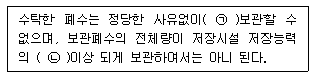
- ㉠ 10일 이상, ㉡ 80%
- ㉠ 10일 이상, ㉡ 90%
- ㉠ 30일 이상, ㉡ 80%
- ㉠ 30일 이상, ㉡ 90%
(정답률: 59%)
86. 수질 및 수생태계 하천 환경기준 중 생활환경 기준에 적용되는 등급에 따른 수질 및 수생태계 상태를 나타낸 것이다. 다음 설명에 해당하는 등급의 수질 및 수생태계 상태는?
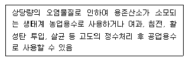
- 약간 나쁨
- 나쁨
- 상당히 나쁨
- 매우 나쁨
(정답률: 50%)
87. 폐수종말처리시설의 유지•관리기준에 관한 사항으로 ( )에 옳은 내용은?
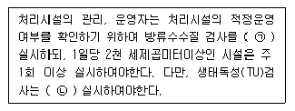
- ㉠ 월 2회 이상 ㉡ 월 1회 이상
- ㉠ 월 1회 이상 ㉡ 월 2회 이상
- ㉠ 월 2회 이상 ㉡ 월 2회 이상
- ㉠ 월 1회 이상 ㉡ 월 1회 이상
(정답률: 64%)
88. 오염총량관리기본방침에 포함되어야 하는 사항으로 틀린 것은?
- 오염총량관리의 목표
- 오염총량관리의 대상 수질오염물질 종류
- 오염원의 조사 및 오염부하량 산정방법
- 오염총량관리 현황
(정답률: 43%)
89. 하천, 호수에서 자동차를 세차하는 행위를 한 자에 대한 과태료 처분기준으로 적절한 것은?
- 100만원 이하의 과태료
- 50만원 이하의 과태료
- 30만원 이하의 과태료
- 10만원 이하의 과태료
(정답률: 61%)
90. 환경부장관이 설치•운영하는 측정망의 종류로 틀린 것은?
- 퇴적물 측정망
- 점오염원 배출 오염물질 측정망
- 공공수역 유해물질 측정망
- 생물 측정망
(정답률: 43%)
91. 수질오염물질 총량관리를 위하여 시 • 도지사가 오염총량관리기본계획을 수립하여 환경부장관에게 승인을 얻어야 한다. 계획수립시 포함되는 사항으로 거리가 먼 것은?
- 해당 지역 개발계획의 내용
- 시 • 도지사가 설치 • 운영하는 측정망 관리계획
- 관할 지역에서 배출되는 오염부하량의 총량 및 저감계획
- 해당 지역 개발계획으로 인하여 추가로 배출되는 오염부하량 및 그 저감계획
(정답률: 43%)
92. 수질자동측정기기 및 부대시설을 모두 부착하지 아니할 수 있는 시설의 기준으로 옳은 것은?
- 연간 조업일수가 60일 미만인 사업장
- 연간 조업일수가 90일 미만인 사업장
- 연간 조업일수가 120일 미만인 사업장
- 연간 조업일수가 150일 미만인 사업장
(정답률: 66%)
93. 공공폐수처리시설의 관리•운영자가 처리시설의 적정운영 여부 확인을 위한 방류수 수질검사 실시기준으로 옳은 것은? (단, 시설규모는 1000m3/day이며, 수질은 현저히 악화되지 않았음)
- 방류수 수질검사 월 2회 이상
- 방류수 수질검사 월 1회 이상
- 방류수 수질검사 매분기 1회 이상
- 방류수 수질검사 매반기 1회 이상
(정답률: 47%)
94. 배출부과금을 부과할 때 고려하여야 하는 사항으로 틀린 것은?
- 배출허용기준 초과여부
- 자가측정여부
- 수질오염물질 처리비용
- 배출되는 수질오염물질의 종류
(정답률: 47%)
95. 초과부과금 산정 시 1킬로그램당 부과금액이 가장 큰 수질오염물질은?
- 크롬 및 그 화합물
- 비소 및 그 화합물
- 테트라클로로에틸렌
- 납 및 그 화합물
(정답률: 42%)
96. 기본배출부과금 산정 시 적용되는 지역별 부과계수로 맞는 것은?
- 가 지역 : 1.2
- 청정지역 : 0.5
- 나 지역 : 1
- 특례지역 : 2
(정답률: 56%)
97. 호소수 이용 상황 등의 조사•측정 등에 관한 설명으로 ( )에 알맞은 내용은?
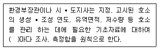
- 2년
- 3년
- 5년
- 10년
(정답률: 39%)
98. 수질 및 수생태계 보전에 관한 법률 상의 용어 정의가 틀린 것은?
- 폐수 : 물에 액체성 또는 고체성의 수질오염물질이 섞여 있어 그대로는 사용할수 없는 물
- 수질오염물질 : 사람의 건강, 재산이나 동, 식물 생육에 위해를 줄 수 있는 물질로 환경부령으로 정하는 것
- 강우유출수 : 비점오염원의 수질오염물질이 섞여 유출되는 빗물 또는 눈 녹은 물 등
- 기타수질오염원 : 점오염원 및 비점오염원으로 관리되지 아니하는 수질오염물질을 배출하는 시설 또는 장소로서 환경부령으로 정하는 것
(정답률: 50%)
99. 휴경 등 권고대상 농경지의 해발고도 및 경사도는?
- 해발고도 : 해발 200미터, 경사도 : 10%
- 해발고도 : 해발 400미터, 경사도 : 15%
- 해발고도 : 해발 600미터, 경사도 : 20%
- 해발고도 : 해발 800미터, 경사도 : 25%
(정답률: 65%)
100. 수질 및 수생태계 중 하천의 생활환경 기준으로 틀린 것은? (단, 등급 : 약간좋음, 단위 : mg/L)
- COD : 2이하
- BOD : 3이하
- SS : 25이하
- DO : 5.0이상
(정답률: 35%)
우리나라 개인하수처리시설에서 발생되는 정화조오니는 BOD (Biochemical Oxygen Demand) 농도가 8000mg/L내외이며, SS (Suspended Solids) 농도가 22000mg/L내외입니다. 이는 생물학적으로 분해 가능한 성분이 많이 포함되어 있음을 나타냅니다. 따라서 "분뇨보다 생물학적 분해불가능 성분을 적게 포함 한다."는 설명은 틀린 설명입니다.
정화조오니는 처리시설형식에 따라 성상이 현격하게 차이를 보입니다. 이는 처리 과정에서 사용되는 기술과 장비, 운영 방식 등에 따라 달라지기 때문입니다.